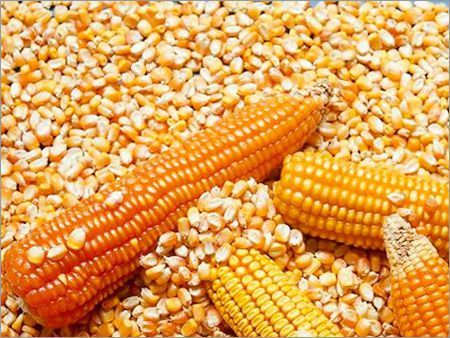

El maíz es una planta herbácea que pertenece a la familia de las gramíneas. Es uno de los cultivos más
importantes
en todo el mundo y se ha cultivado desde hace miles de años en América, donde se originó. Se caracteriza
por
tener
un tallo grueso y alto, que puede alcanzar hasta tres metros de altura. Sus hojas son largas y
estrechas, y
están
dispuestas de forma alternada a lo largo del tallo. La planta produce una inflorescencia en forma de
espiga,
que
contiene numerosos granos o semillas de maíz.
El maíz es un alimento básico en la dieta de muchas culturas, especialmente en América Latina, donde se
utiliza para la elaboración de diversos platos tradicionales, como las tortillas, los tamales y el atol.
También se utiliza como alimento para animales y como materia prima para la producción de productos
industriales como el jarabe de maíz y el almidón de maíz. Es rico en nutrientes como carbohidratos,
proteínas, vitaminas y minerales, y es una fuente
importante de energía en la dieta humana y animal. Además, su cultivo es muy importante desde un punto de
vista económico, ya que es uno de los principales cultivos alimentarios del mundo.
Origen del Maiz
El maíz se originó en América, específicamente en la región de Mesoamérica, que comprende lo que hoy en día son
México, Guatemala, Belice, Honduras, El Salvador y Nicaragua. Se cree que el maíz fue domesticado a partir de
una especie silvestre llamada teocintle, que todavía se encuentra en algunas regiones de México y Guatemala.
Los primeros vestigios arqueológicos de maíz cultivado se han encontrado en México y datan de alrededor de 5000
a.C. A partir de ahí, el cultivo del maíz se expandió a otras regiones de América, y se convirtió en un alimento
fundamental para muchas culturas precolombinas, como la maya, la azteca y la inca.
Tipos de Maiz
Existen varios tipos de maíz, que se diferencian por su color, sabor, textura y uso. Algunos de los tipos de
maíz más comunes son:
Maíz blanco
Es el tipo de maíz más común y se utiliza para la elaboración de tortillas, tamales, atoles, entre
otros.
Maíz amarillo
Es un tipo de maíz que se utiliza principalmente para la producción de alimentos balanceados para
animales y para la elaboración de alimentos industriales, como el jarabe de maíz.

Maíz morado
Es un tipo de maíz originario de Perú, que se utiliza para la elaboración de platos tradicionales como
el chicha morada.
Maíz azul
Es un tipo de maíz que se utiliza para la elaboración de tortillas y tamales en algunas regiones de
México y Centroamérica.
Maíz dentado
Es un tipo de maíz que se caracteriza por tener una muesca en la parte superior de cada grano, y se
utiliza para la producción de harina de maíz.
Maíz dulce
Es un tipo de maíz que se utiliza principalmente para la elaboración de alimentos dulces, como postres y
cereales.
Maíz para poporopos
Es un tipo de maíz que se utiliza exclusivamente para la producción de poporopos o tambien llamados
palomitas de maíz.
Maíz criollo
Es un tipo de maíz nativo de Guatemala y otras regiones de América Latina, que se cultiva en pequeñas
fincas y se utiliza para la producción de alimentos tradicionales.
Maíz híbrido
También se cultiva en Guatemala y se produce a partir del cruce de variedades de maíz para obtener
características deseadas como mayor productividad, resistencia a enfermedades y plagas, y calidad del
grano.
Maíz cónico
Es un tipo de maíz utilizado para la elaboración de pinol y otros alimentos.
Mira el siguiente video para complementar la informacion